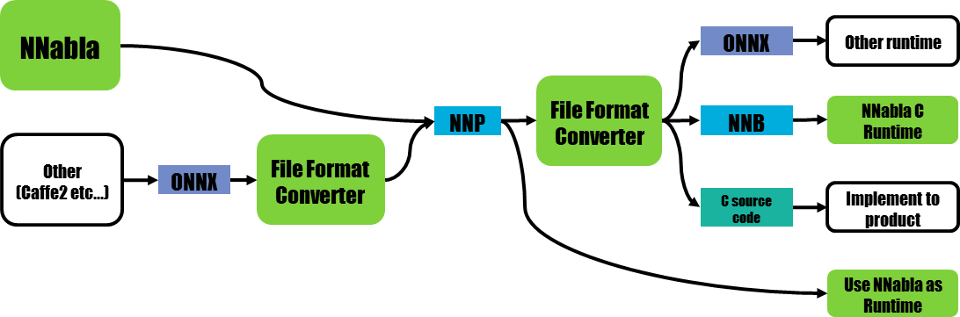

File format converter¶
Overview¶
File format converter will realize Neural Network Libraries (or Console) workflow with ONNX file format, and also NNabla C Runtime.
File format converter has following functions.
- Convert NNP valiations to valid NNP
- Convert ONNX to NNP
- Convert NNP to ONNX
- Convert NNP to NNB(Binary format for NNabla C Runtime)
- Experimental: Convert NNP to C Source code for NNabla C Runtime
IMPORTANT NOTICE: This file format converter still has some known problems.
- Supported ONNX operater is limited. See Operator support status.
- Converting NNP to C Source code is still experimental. It should work but did not tested well.
NNP¶
NNP is file format of NNabla.
NNP format is described at Data Format.
But with this file format converter is work with several variation of NNP.
- Standard NNP format (.nnp)
- Contents of NNP files(.nntxt, .prototxt, .h5, .protobuf)
Convert NNP to NNP¶
Sometimes we neeed convert NNP to NNP.
Most major usecase, expand repeat or recurrent network supported by Neural Network Console but does not supported by C++ API.
$ nnabla_cli convert --nnp-no-expand-network input.nnp output.nnp
Convert Contents of NNP to NNP¶
Current version of Neural Network Console outputs .nntxt and .h5 as training result.
Then we need to convert separated files into single NNP and parameters store with protobuf format.
Usage¶
- Convert console output to single NNP file
$ nnabla_cli convert net.nntxt parameters.h5 output.nnp
- Convert console output to single NNP file without expanding Repeat or recurrent.
$ nnabla_cli convert --nnp-no-expand-network net.nntxt parameters.h5 output.nnp
- Keep parameter format as hdf5
$ nnabla_cli convert --nnp-no-expand-network --nnp-parameter-h5 net.nntxt parameters.h5 output.nnp
- Everything into single nntxt.
$ nnabla_cli convert --nnp-parameter-nntxt net.nntxt parameters.h5 output.nntxt
ONNX converter¶
Limitation¶
- Training does not supported
- Only supports operatior set 3
- Not all functions are supported. See Operator support status.
- Only limited Neural Network Console projects supported. See Neural network console examples support status..
- In some case you must install onnx package by hand. For example you can install with command pip install onnx or if you want to install system wide, you can install with command sudo -HE pip install onnx.
Usage¶
- Convert NNP to ONNX
$ nnabla_cli convert input.nnp output.onnx
- Convert ONNX to NNP
$ nnabla_cli convert input.onnx output.nnp
Work with NNabla C Runtime¶
NNB¶
NNB is compact binary format for NNabla C Runtime. It is designed for nnabla-c-runtime.
C Source Code¶
File format converter supports C source code output for nnabla-c-runtime.
Usage¶
- Convert NNP to NNB
$ nnabla_cli convert input.nnp output.nnb
- Convert NNP to C source code.
$ nnabla_cli convert -O CSRC input.onnx output-dir